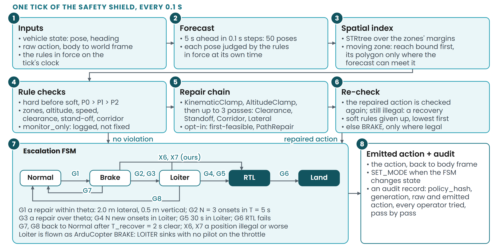
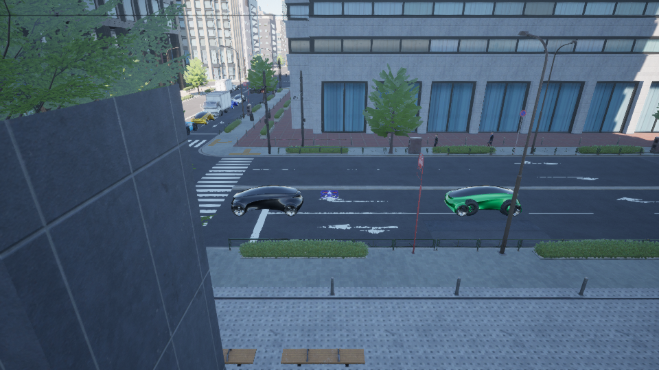
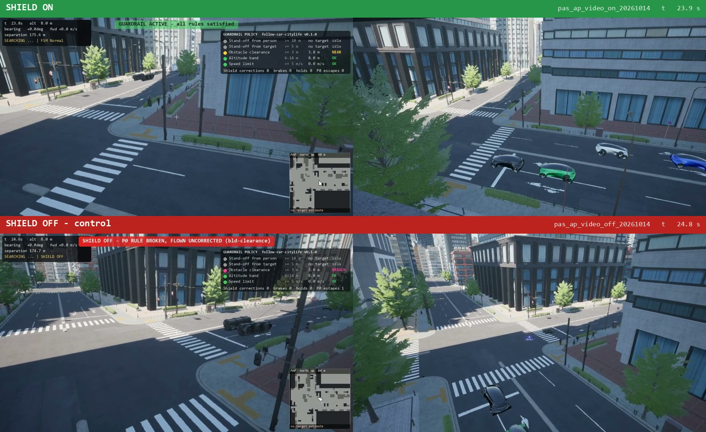
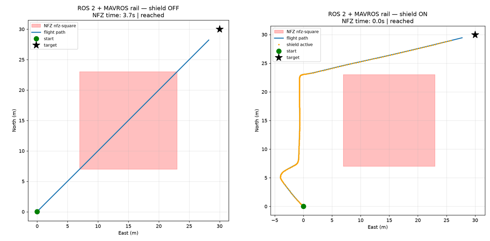
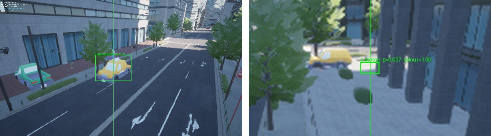
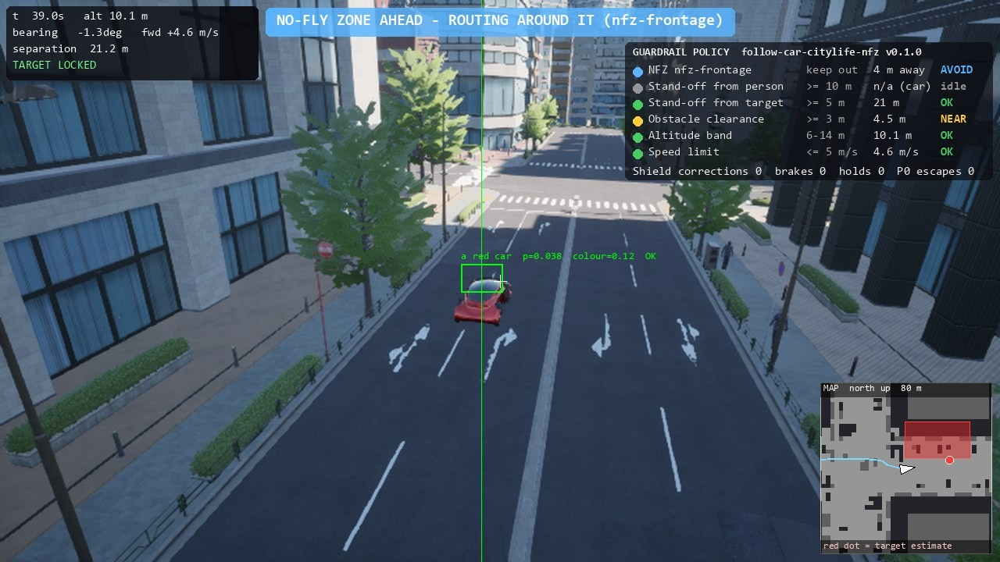

WP3 · 工作項目
Suffix Safety Shield
WP3 交付位於 VLA 與 MAVROS 2 之間的 ROS 2 節點：檢查每個指令，若會違規就修正。在計畫書的設計中，修正不安全時還會升級為 Brake、Loiter、RTL 或 Land，並以 ArduPilot 本身的 GeoFence 作為最後一道防線。
計畫書的要求
“The Shield is the last software layer before the autopilot.”計畫書 Safety Shield 頁面
主要檔案：guardrail/shield.py guardrail/ir.py guardrail/fsm.py sitl/ros2_shield_node.py sitl/mavlink_adapter_node.py demo/pas_ardupilot/ demo/policy_hud.py
一張圖看懂

已完成
檢查每一道指令的 Shield
每個 tick，Shield 都會依計畫書的規定，以每 0.1 s 一步預測指令在接下來 5 s 會把無人機帶到哪裡，依所有生效的規則檢查，用小型修正運算子（速度、爬升與偏航限制、高度修正、淨空修正、安全距離恢復、走廊返回、禁航區邊緣滑行）修正，再檢查一次結果；若沒有乾淨的修正，就煞停。
guardrail/shield.py計畫書的 ROS 2 介面
Shield 以 ROS 2 節點的形式位於駕駛與 MAVROS 2 之間，全程使用機體座標系的動作。另一個 MAVLink 轉接節點把檢查過的動作轉成本地 NED 座標，以 PositionTarget 發布給 MAVROS 2，因此 ArduPilot 只會收到檢查過的指令。這些套件附有啟動檔，每個 episode 都會寫入自己的稽核檔、事件記錄與 rosbag2 錄製檔。
sitl/ros2_shield_node.pysitl/mavlink_adapter_node.pysitl/ros2_ws/由 ArduPilot 飛行的 Project AirSim，並把資料流送到 Mission Planner 的連接埠
Project AirSim 模擬無人機、攝影機與城市，ArduPilot SITL 則透過模擬器內建的 ArduPilot 控制器飛行這架機體。mavlink-router 把 ArduPilot 的 MAVLink 資料流送到 Mission Planner 的 UDP 14550 連接埠，以及在同一個程序中執行攝影機、偵測器、Shield 與升級狀態機的感知節點。自 10 月 14 日起，這個節點可以像城市示範一樣錄下飛行：附規則指示面板的無人機攝影機畫面，以及追蹤視角，錄製在控制迴圈之外進行。
demo/pas_ardupilot/scripts/run_pas_ardupilot.ps1編譯後的禁航區索引
每個禁航區的緩衝邊界只建立一次並建立索引（STRtree），因此 Shield 只檢查預測軌跡可能碰到的禁航區；它也保留最近 50 個 tick 作為滑動視窗。移動禁航區只在預測軌跡可能碰到的地方建立：200 次檢查中，Shield 建立 199 個移動禁航區，而不是 9600 個。
guardrail/ir.py升級狀態機
Normal → Brake → Loiter → RTL → Land，採用計畫書的預設值：5 s 內 3 次違規即升級、修正幅度大於 θ（水平 2.0 m、垂直 0.5 m）即升級、連續 2 s 沒有違規即回到 Normal。它在每個 tick 都於 Shield 內執行，每次修正都會回報幅度，因此可套用 θ；ROS 2 節點與 ArduPilot 感知節點依它向 ArduPilot 要求切換飛行模式。定點步驟以 ArduCopter 的 BRAKE 模式飛行，不需駕駛輸入也能維持高度：在 10 月 13 日的一次飛行中，它把機體維持在 7.99-8.01 m，不過在第二次定點中違規深度仍持續增加（2.07 s 內 2.95 m），升級機制因此把機體送回起飛點。
guardrail/fsm.pyguardrail/shield.py以 ArduPilot GeoFence 作為最後防線
參數檔設定 ArduPilot 自己的 GeoFence（FENCE_ENABLE、FENCE_TYPE、FENCE_ACTION），位於 Shield 後方；ArduPilot 感知節點在起飛後會從飛控讀回圍欄設定，並隨飛行一起記錄。
sitl/fence/guardrail_fence.parmdemo/pas_ardupilot/citylife-quad.param稽核日誌
Shield 發現或修正問題的每個 tick 都會寫入稽核日誌，內含規則檔雜湊值、原始與實際送出的指令，以及送出指令中殘留的違規。每筆記錄都依公開的 schema 驗證，並列出嘗試過的每個修正運算子、其結果與迭代次數。
guardrail/audit.pypolicies/audit_record.schema.jsonguardrail/repair.py螢幕上的規則
疊在影片上的面板列出已載入規則檔的每條規則、其限制、即時數值與狀態；橫幅顯示最近 1.5 s 內最重要的事件，北方朝上的地圖顯示禁航區與飛行軌跡。面板上每條規則的狀態直接取自 Shield 本身的規則檢查器。
demo/policy_hud.py
已展示

Gate G1：ArduPilot 飛行 Project AirSim
同一條 AUTO 方形任務（邊長 10 m、高度 15 m）由 ArduPilot SITL 飛行 Project AirSim 的機體，3 次執行全部通過。ArduPilot 的位置估計與模擬器真實位置的差距在 0.81-0.82 m 以內（p95），上限為 1.0 m，若位置停在起點不動則為 18.9-19.0 m；它的馬達指令讓機體從靜止爬升 14.5 m；每次執行都抵達全部 5 個任務點，空中沒有碰撞，降落點距起飛點 0.2 m 以內；ArduPilot 以即時速度的 0.958-0.967 倍執行。圖片是第一次執行起飛後的追蹤視角。10 月 13 日 ArduPilot 的圍欄設定變更後，再次 3/3 通過：0.82-0.83 m（p95），位置停在起點不動則為 18.96-18.98 m，圍欄觸發 0 次。單一桌機，開發階段的執行。
重現方式：
./scripts/run_pas_ardupilot.ps1 -Step g1 -AltM 15
在 ArduPilot 軌道上開啟與關閉 Shield，並錄成影片
在 Project AirSim + ArduPilot SITL 上近距離接近紅車，以 pymavlink 指揮（不屬於計畫書的任何拓撲），10 月 14 日在 Shield 開啟與關閉下各錄一次。Shield 開啟：在 Shield 負責飛行的 388 個 tick 中，P0 逃逸 tick 為 0；升級機制先煞停，再把機體送回起飛點，517 個 tick 中其餘的部分由 ArduPilot 的返航飛行。Shield 關閉、同一個駕駛：1099 個 tick 中有 736 個 P0 逃逸 tick（比率 0.6697），駕駛的指令直接飛進建築物淨空範圍。逃逸次數判斷的是 Shield 送出的每道指令，而不是機體實際所在的位置：開啟 Shield 時，517 個 tick 中仍有 71 個 tick 機體位於 P0 安全邊界之內（20 個是在 Brake 狀態下由 Shield 飛行修正後的指令，最深 1.0 m；51 個在 ArduPilot 返航期間），關閉 Shield 時為 739 個。Shield 的預測從指令速度出發，而不是機體本身的速度，因此每道遠離建築物的修正都被判為正在恢復，機體其實還在減速；從機體本身速度出發的預測是下一步。10 月 13 日同樣的接近飛行，開啟 Shield 時逃逸 tick 為 0，關閉時比率為 0.661；第二次定點中違規深度持續增加（2.07 s 內 2.95 m），升級機制因此把機體送回起飛點。偵測器的框落在紅色交通號誌上，而不是車上，因此這些飛行檢驗的是 Shield，不是追蹤。圖片是並排影片中的一刻：開啟 Shield 時每條規則都滿足，關閉時同一個駕駛違反了建築物淨空。
Mission Planner 的連接埠收到整段飛行
在一次 120 s 的紅車跟隨飛行中，感知節點執行攝影機、偵測器、Shield 與升級狀態機，並直接透過 MAVLink（pymavlink，尚未經過 MAVROS 2）指揮 ArduPilot。在 Mission Planner 的 UDP 14550 連接埠上代替 Mission Planner 接收資料的監聽程式，在整個任務期間以 19.0 Hz 收到位置與姿態資料，最長間隔不超過 0.1 s。單一桌機；由於計畫書的拓撲都使用 MAVROS 2，這次飛行不屬於其中任何一種。
重現方式：
python sitl/gcs_listen.py listen --seconds 300 --out gcs.json; python sitl/gcs_listen.py check gcs.json demo/out/<tag>/events.jsonl
在 ArduPilot SITL 上關閉與開啟 Shield
同一條航點任務，在一台桌機上以 ArduPilot SITL 搭配 MAVROS 2 執行（計畫書的 dev 拓撲），由刻意忽略規則的腳本測試駕駛飛行。Shield 關閉：在禁航區內 3.7 s。Shield 開啟：0.0 s；Shield 修正了指令，路徑繞過禁航區。
P0 逃逸率與對照飛行
在同一套 SITL 環境上的開發階段飛行（dev 拓撲，腳本測試駕駛）。開啟 Shield 時，這幾次飛行的 P0 違規逃逸率都是 0.00；未開啟 Shield 的對照飛行為 0.6265（禁航區任務）與 0.6310（行人安全距離任務）。計畫書的 KPI 在 hil 拓撲（Jetson Orin）上量測。
重現方式：
python tools/kpi_report.py使用編譯後索引的禁航區檢查
以 50 條規則（其中 48 條為禁航區）、3 s 預測、每 0.5 s 一步，靠近禁航區時一次檢查需 0.13-0.26 ms，完整的 Shield 一步需 0.55-1.0 ms（皆為中位數）；加入索引前分別為 14-33 ms 與 172 ms。改用計畫書規定的 5 s 預測、每 0.1 s 一步（50 個位置）時，靠近禁航區的一次檢查需 0.39 ms，完整的 Shield 一步需 2.5 ms。計畫書的預算是每次檢查 5 ms、每個 tick 100 ms。於開發用桌機量測。
重現方式：
python experiments/bench_shield_50rules.pyVLA 與 Shield 在同一個 tick 中運作
在一批 8 次的模擬飛行（每次 150 s）中，每一次開啟 Shield 的飛行都顯示：VLA（AerialVLA）決定航向，同時 Shield 在同一個控制 tick 中偏轉飛行軌跡。

安全距離隨目標類別改變
操作員在飛行中把描述從「a yellow car」改為「a person」時，目標類別變成行人，強制的安全距離從 5 m 變為 10 m，飛機、規則檔與雜湊值都不變。

城市中的螢幕規則顯示
一次 240 s 的紅車跟隨飛行，車輛行經的街道上設有禁航區：跟隨控制器讀取同一份規則檔並繞過禁航區，無人機從未進入，並在 98.5 % 的任務時間內與車保持 30 m 以內（同樣 10 m 巡航高度、沒有禁航區的飛行為 98.7 %；使用舊目標選擇的 7 次早期飛行為 8.8-43.6 %）。